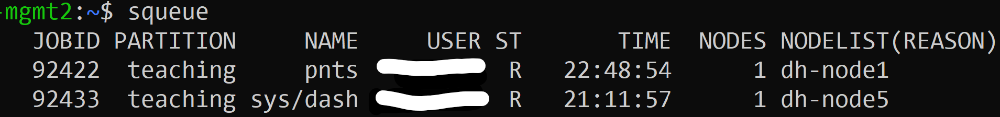

Simple Linux Utility for Resource Management - SLURM
Slurm is our tool of choice to manage jobs on Rosie, we will use it to allocate resources and start / monitor our jobs
-
Connect To A Rosie Terminal
If you've already gone through the steps to get logged in to Rosie for the first time then this is familiar.
Open up your terminal of choice and enter the following command changing username to your username:
ssh username@dh-mgmt2.hpc.msoe.edu
You'll be prompted for your password and then be greeted with the login text.
Note that you will need to be on the school network, if you are not, open up globalprotect as described here.
Alternatively, you can use the VSCode terminal after following the steps here.
-
Useful SLURM Commands
-
squeue
This command will show details on all currently running jobs.
This is useful for finding details on jobs you've started.
To filter jobs to only your, you can add the following arguements to the command replacing username with your username.
squeue -l -u username
An example output is below.

-
scancel <jobid>
This will cancel a job, enter the command followed by the jobid as can be found with squeue
-
sbatch script.sh
This will submit a batch script to be run. This is useful for creating job templates and submitting multiple jobs at once.
An example can be downloaded here.
Unzip the folder and drop it's contents somewhere onto Rosie
In a Rosie connected terminal, cd into the directory that you dropped the files
Run the command sbatch batch.sh
You'll notice that you not have a .out file with the name of your job id that has the output of the python file.
You can view this file by running the command $ tail -f slurm-(job-id).out which will show the output in real time.
You can also use the squeue command to see that your job is running.